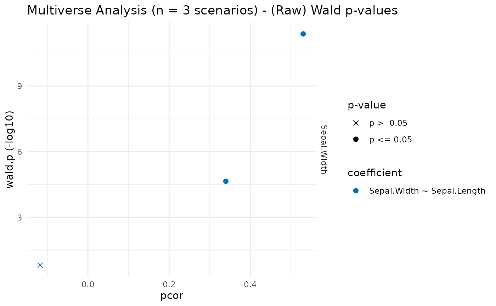
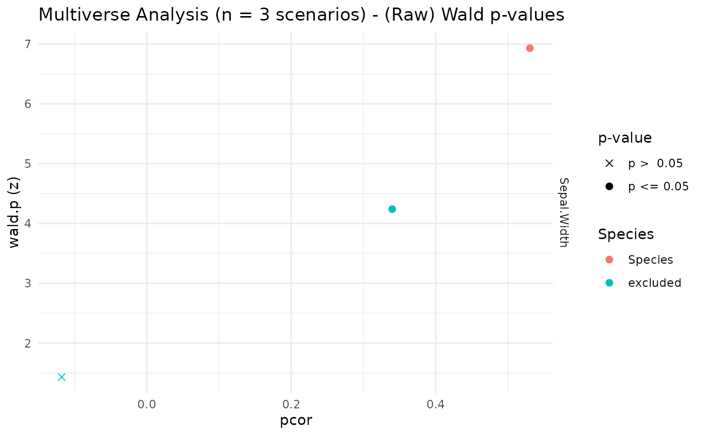

Plots one point per specification and coefficient: an estimate-like column
(xvar) against the transformed p-values, with significant specifications
marked by the shape. The plot is built from the table returned by
spec_table(), so it works with pima objects, pima.multi objects,
lists of fitted models, or a (possibly filtered) specification table.
plot() on a pima object calls this function.
Usage
spec_scatter(
x,
focal = NULL,
focal.var = NULL,
xvar = "pcor",
yvar = NULL,
p = NULL,
p.adjusted = NULL,
p.transf = "z",
by = "coefficient",
alpha = 0.05,
xlab = NULL,
ylab = NULL,
title = NULL,
shapes = NULL,
facet = NULL,
facet.scales = "free_x",
which.response = NULL
)Arguments
- x
A
pimaobject, apima.multiobject created withfit.specs, a list of fittedlmorglmmodels, or a table returned byspec_table().- focal
A character vector of coefficient names to plot (exact match, e.g.
"log(x)"or"groupB").- focal.var
A character vector of variable names to plot: all the coefficients coming from these variables are selected, whatever their transformation (e.g.
"x"selectsx,log(x)andsqrt(x)) or coding (e.g."group"selectsgroupBandgroupC). When bothfocalandfocal.varare supplied, the union is plotted. When both areNULL, the defaults are the tested coefficients (focal, forpimaobjects), the focal predictors ofcreate_multi()(focal.var, forpima.multiobjects), or all the coefficients except the intercept.- xvar
column of the specification table plotted on the x-axis. Default
"pcor", comparable across coefficients.- yvar
column of the specification table plotted on the y-axis. If
NULL(default), the p-values transformed withp.transf.- p
Character indicating the column of p-values used to define significance. Any column of the table can be used. If
NULL, the column is chosen with fixed rules (see Details).- p.adjusted
Logical. For
pimaobjects,TRUEuses the adjusted p-values ("p.adj") andFALSEthe unadjusted flipscores p-values ("p");NULL(default) uses the adjusted ones whenpima()applied a correction and the flipscores ones otherwise. For lists of models andpima.multiobjects the p-values are never adjusted:FALSE(orNULL) uses"wald.p"andTRUEis an error. Ignored whenpis supplied.- p.transf
transformation of the p-values (see
transf_p()) or a custom function. Used whenyvarisNULL.- by
colour of the points:
"coefficient"(one colour perresponse ~ coefficient) and/or specification columns (attr(spec_table(x), "spec_vars"), e.g."fit_spec","link"or a predictor). With more than one, their combinations are used. A single group is drawn in"#0072B2".- alpha
significance level marked by the shape. If 0 or 1 the shapes are not labelled.
- xlab, ylab
axis labels. Default to
xvarand to the p-value column and its transformation (oryvar).- title
plot title. If
NULL, describes the p-values used.- shapes
ggplot2 shapes for non-significant and significant points. Default
c(4, 19).- facet
formula passed to
ggplot2::facet_grid(). IfNULL(default),response ~ .with one response and a single panel with more than one (useresponse ~ .to split them).- facet.scales
"fixed","free","free_x"(default) or"free_y".- which.response
responses to plot; defaults to all.
See also
Other specification tables and plots:
spec_curve(),
spec_table(),
transf_p(),
volcano()
Examples
mods <- list(
a = lm(Sepal.Width ~ Sepal.Length, data = iris),
b = lm(Sepal.Width ~ Sepal.Length + Species, data = iris),
c = lm(Sepal.Width ~ Sepal.Length + Petal.Width, data = iris)
)
spec_scatter(mods, focal = "Sepal.Length", p.transf = "-log10")

# colour by a specification choice
spec_scatter(mods, focal = "Sepal.Length", by = "Species")
